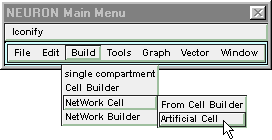
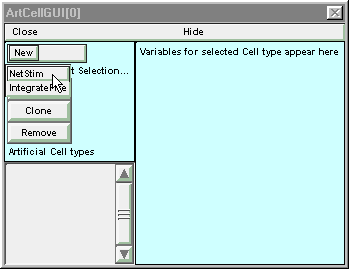
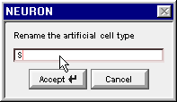
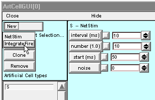

Step 1. Define the types of cells
First we make a stimulator class, and then we make an integrate and fire cell class. These will be based on the NetStim and IntegrateFire point processes described in the on-line help files.
A. We need the GUI tool for specifying new types of artificial cells.
Open up an ArtCellGUI window by clicking on in the NEURON Main Menu.
B. We need a class of cells that can supply spike trains.
The list of Artificial Cell types is empty because we haven’t created any new types of artificial cells yet.
Click on New and scroll down to NetStim
The list of Artificial Cell types will now contain a new item called NetStim. The right panel will display the user-settable parameters for this class of cells. For this exercise, leave these default values unchanged.
The defaults are for a train of 10 events that occur at fixed intervals of 10 ms starting at t = 50 ms. The “noise” parameter, which has a default value of 0 and can range from 0 to 1, specifies the fraction of the interspike interval that is subject to Poisson variation. That is, the total interspike interval equals the sum of a fixed fraction
(1 - noise) * interval
plus a variable fraction whose duration follows the Poisson distribution with a mean of
noise * interval
Note that 0 is the most likely duration of the variable fraction.
C. We need to give this new cell class a short, unique name.
This will reduce clutter in the Network Builder window. It will also help us avoid becoming confused if we spawn variant cell classes that are based on the same progenitor but differ in key parameters (e.g. a net may include several different varieties of NetStim cell classes, each of which has its own mean firing interval, number of spikes, start time, and degree of randomness).
To rename this cell type, click on the Rename button.

This pops up a window with a string editor field. Click in the string editor field and change the name of this class to S, then click the Accept button.
The list of Artificial Cell types will now contain a single entry named S, and the right panel will show that S is derived from the NetStim class.
D. We need a class of cells that can integrate synaptic inputs.
Click on New and scroll down to IntegrateFire
This creates a new entry in the list of Artificial Cell types called IntegrateFire.
Change the name of this new class to C, so that ArtCellGUI window looks like this :

For a definitive description of how an IntegrateFire object works, see the on-line help files. Briefly, an IntegrateFire object has an “excitation” (analogous to membrane potential) that decays toward 0 with time constant tau. When an input event associated with weight w arrives, the excitation increments “instantaneously” by w. Should the excitation exceed 1, the IntegrateFire object will produce an output “spike” event, after which it becomes unresponsive to further inputs for an interval given by spikedur + refrac. At the end of the refractory interval, the cell once again integrates inputs starting from an excitation level of 0.
Here are a couple of tips before we move on to the Network Builder.
This would be a good time to save the ArtCellGUI tool to a session file.
You may hide the ArtCellGUI tool, but don’t close it. The Network Builder will need it to exist.